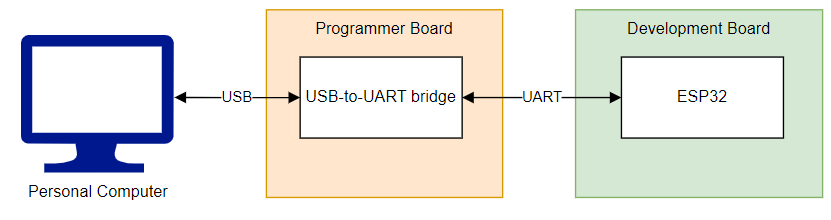

Workshop 1 - Setting up the Integrated Development Environment¶
What is the Arduino Software (IDE)?¶

The Arduino Integrated Development Environment—or Arduino Software (IDE)—connects to Arduino/ESP boards to upload software and communicate with them. It brings together in a single graphical interface essential tools for software development, such as a code editor, compiler, and debugger.
The programs, also called sketches, are writen in the code editor and save as a .ino file.
Download the IDE¶
First things first: Download the Arduino IDE on the official website Arduino.cc.
Connect the ESP32 and Install the Driver¶
To establish a serial connection with your ESP32 device, use a USB-to-UART bridge. This allows your computer to communicate with the ESP32 for programming and debugging.
In some cases, the USB-to-UART bridge is provided as an external module. This approach is common for compact development boards or final products where minimizing space and cost is important.

- The chip enables bidirectional communication (conversion):
- from the ESP, it converts UART to USB for the PC.
- from the PC, it converts USB to UART for the ESP.
- So what is the purpose of the driver?
- it allows the operating system to recognize this chip as a virtual serial port (
COM).
- it allows the operating system to recognize this chip as a virtual serial port (
That is what we will do! ;)
- First connect the ESP32 to the PC.
- Download and install the CP210x driver: CP210x USB to UART Bridge VCP Drivers.
- Check whether the installation was successful. In the Device Manager, under "Ports," the
Silicon Labs CP210x USB to UARTshould appear.
For more details, refer to the ESP32 Serial Connection Guide.
IDE at First Glance¶
When you open the IDE for the first time, this sketch window appears.
-
void setup(): runs only once. Used for initialisations. -
void loop(): runs in a loop. Statements are executed infinitely.
In summary, this is the basic structure that every Arduino program follows. The setup() function runs once at the start, typically used for initialization, while the loop() function contains the main code that runs repeatedly. This structure ensures your program can continuously respond to inputs and perform tasks.
// this is a comment
void setup()
{
//this part will be run just once
}
void loop()
{
//this part will be executed in a loop
//(as the name of the function suggests)
}
The following flowchart represents the code flow.
Installing the ESP32 library¶
Navigate to the Boards Manager, search for Arduino ESP32 Boards or esp32, and then click Install.
If this step did not work, please follow the randomNerdsTutorial approach link to install the ESP32 board in the arduino IDE.
Selecting the ESP board¶
To select the board navigate to Tools > Board > esp32 > ESP32 Dev Module.
Alternativelly:
Example 1: Hello World¶
The codes below show two options for printing "Hello World" via Serial communication. Please open the Serial Monitor in the Arduino IDE to see what is being transmitted.
// ESP32 "Hello, world" — v1
void setup() {
Serial.begin(115200); // Open serial at 115200 bps
Serial.println("Hello, world");
}
void loop() {
// Nothing to do here
}
// ESP32 "Hello, world" — v2
void setup() {
Serial.begin(115200);
}
void loop() {
Serial.println("Hello, world");
delay(1000);
}
Question: What is the difference in the behavior of the codes?
- In the first code, "Hello, world" is printed only once, right after the ESP32 starts, because the
Serial.println("Hello, world");command is inside thesetup()function, which runs only once. - In the second code, "Hello, world" is printed repeatedly every second, because the
Serial.println("Hello, world");command is inside theloop()function, which runs continuously. Thedelay(1000);causes a 1-second pause between each print.
Example 2: Wifi Scan¶
Let's try a built-in example from the IDE.
First, open the WiFiScan example. Navigate to File > Examples > WiFi > WiFiScan.

To open the Serial Monitor, click the magnifying glass icon in the upper right corner of the window.

The ESP will output the Wifi networks found:
References¶
- Using the Arduino Software (IDE) https://docs.arduino.cc/learn/starting-guide/the-arduino-software-ide/
- UART Communication https://randomnerdtutorials.com/esp32-uart-communication-serial-arduino/
Input and Output¶
Learning Objectives¶
- Understand the concept of GPIO (General Purpose Input/Output).
- Configure ESP32 digital pins as input and output.
- Write simple programs to control LEDs.
- Read the state of physical buttons and use them to interact with LEDs.
- Develop basic conditional control logic using if/else statements.
Introduction to GPIOs¶
What are digital input and output pins?¶
-
Digital Output:
A pin configured as output can send a HIGH (3.3V) or LOW (0V) signal. Then powering an LED for instance. Example: turning an LED on or off. -
Digital Input:
A pin configured as input can read external signals as HIGH or LOW.
Example: checking if a button is pressed.
Important to note that in many microcontrollers, every GPIO is at least digital. Some GPIOs have extra capabilities, such as analog input, PWM, or special functions such as connectivity protocols. For the ESP32-WROOM-32, please refer to the "Pin Definitions" chapter in the datasheet.
Basic configuration in code¶
Output Examples – LEDs¶
Turning a single LED on and off¶
// Turn on an LED using ESP32
// Define the pin where the LED is connected
const int ledPin = 23;
void setup() {
// Initialize the LED pin as an output
pinMode(ledPin, OUTPUT);
// Turn the LED on
digitalWrite(ledPin, HIGH);
}
void loop() {
// Nothing else to do in the loop since the LED remains on
}
const int: Declares the variable (ledPin) as a constant integer.pinMode: Initializes the pin asINPUTorOUTPUT. This allows the pin to send/write voltage to the LED (OUTPUT) or to receive/read (INPUT).digitalWrite: Sets the output of the pin toHIGHorLOW.
Exercise 1
**Task:** Develop a program to light up multiple LEDs. **Solution:** [ex1](ex1/ex1.ino)Exercise 2
**Task:** Develop a program to light up multiple LEDs. Make them blink in sequence (use the `delay()` function). **Solution:** [ex2](ex2/ex2.ino)Input Examples – Buttons¶
// Reading the state of a button with ESP32
const int buttonPin = 34; // GPIO where the button is connected
int buttonState = 0; // state of the button
void setup() {
// Initialize Serial Monitor
Serial.begin(115200);
// Configure the button pin as input
pinMode(buttonPin, INPUT);
}
void loop() {
// Read the state of the button
buttonState = digitalRead(buttonPin);
// Print the state
if (buttonState == HIGH) {
Serial.println("Button is pressed!");
} else {
Serial.println("Button is not pressed.");
}
}
Exercise 3
**Task:** Develop a program to turn on an LED when the button is pressed.Exercise 4
**Task:** Develop a program to turn on an LED combinations: multiple buttons controlling LEDs. Create your own logic.Next Workshop¶
Go to Workshop 2 - If-else, While, and Flowcharts.